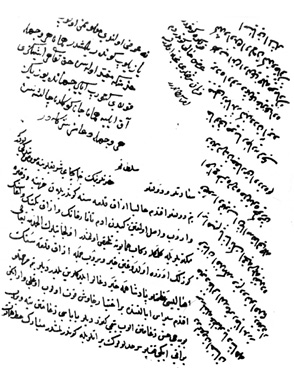

Belge 6: TKSA E7002/53, veziriâzam ‘arzı
Belge 6
“Sa’âdetlü ve devletlü sultanım hazretlerinin hâkipây-i şerîflerine ma’rûz-i bendegî budur ki:
Benim devletlü efendim, hâliyâ Azak kalesine gönderilen hazine ve zahîre varub vâsıl olmağın giden adam Tatar Han’ın ve Azak Begi’nin ve ağasını mektûblarıyla gelmekle rikâb-i hümâyûna telhîs olmuştur. Ol câniblerin elhamdülillâhi ta’âlâ gürezlik (güzellik) üzere olduğun haber virüb cümle Azak kalesinin ehâlisi ‘azametlü pâdişahıma hayır du’âlar eylediklerin bildirdiler.
Benim merhametli efendim, Sivas eyâletinde bir ihtiyar çavuş fevt olub oğlu var iken Boyacı Hasan zeâmetin alub yetimi götürdüler; babası zeâmetin yine virüb berâtı iki fakîr serhadlülerin berâtlarıyla gönderilmişdir. Mübârek hatt-i hümâyûn-i devlet-makrûn ihsân buyrulmağla ‘azametlü pâdişahıma hayır du’âlar aldırmanız ricâ ideriz (iderler). Fermân efendimindir.
Ve benim devletlü efendim, defterdâr İbrahim Paşa’nın akçalarıyla takayyüdde kusûr olunmayub inşallâhu ta’âlâ cümle ihrâcı taşralarda hidmetlere geçürmiş defterlerden çıkarmak üzereyim, hâtûnu Cûybâr câriyeleri hayli zamandır kendüden ayru yerde olur ve şimdi gayrı eve gelüb anda oldu. Cümle Cûybâr’ın kendü evinde olan kendi hâtûn esbâbın almışlar, kulunuza gönderir, ‘arzıhâli gönderdim, fermân-i şerîfleri nice olur ise emir sultanımındır.”
H. H. Kösem Sultan’ın emri:
“Ne ‘arz olundu, ma’lûmumuz olub yazılub gönderilmişdir; hemân her vechile hidmetine mukayyed olasın; Hakk ta’âlâ işinizi kolay getürüb iki cihanda yüzünüz ak eyliye. Hemân cân gönülden çalışasız, her vechile du’âmız sizinledir.”
Yorum:
1. Kırım Hanı ve Azak
Kırım hanlarıyla Bucak (Akkerman nogayları) başbuğu Kantemir Mirzâ arasındaki rekabet ve çarpışmalar, Rus çarına bağımlı Don (Ten) Nehri Kazaklarının Azak Kalesi’ni ele geçirmelerine fırsat verdi (5 Temmuz 1637).29 Don Kazaklarına bu saldırıda Dinyeper Kazakları da katılmıştı. Osmanlı ordusu 1637’de seferdedir. Bir kısım Kırım kuvvetleri de bu sefere katılmışlardır. Don Kazakları bu durumdan yararlanmışlardır. İranlılara, Dinyeper Kazaklarından 4000 kişilik bir yardımcı kuvvetin katıldığını biliyoruz.30 Osmanlı yeniçeri tüfekçilerine karşı Kazak tüfekçileri değerli bir destek oluşturmuştur.
1638 baharında Azak’ın geri alınması için gönderilen Osmanlı kuvveti, Taman Yarımadası’nda Kazaklara baskın yaptı, Kazaklar Azak Kalesi’ne çekildiler. 1639 yılında bu Kazakların, Azak’tan çıkarak Karadeniz kıyılarına dehşet saçan akınları yüzünden halk sahilden içeri kaçmaktaydı.31 Azak’ın bir Kazak saldırı merkezi haline gelmesi yaşamsal bir tehlike gösteriyordu. 1641’de gönderilen önemli deniz-kara kuvvetleri, Azak kuşatmasında başarılı olamadı (Nisan–Kasım 1641). Osmanlı ile bir savaşı göze alamayan Çar, Kazaklara kaleyi boşaltıp çekilmelerini emretti, Osmanlı kuvvetleri boşaltılmış kaleyi işgal ettiler (Mart 1646).32 Avrupa’da Otuz Yıl Savaşları (1618–1648) ve Erdel voyvodası II. Georg Rakoci’nin bu savaşlara katılması dolayısıyla, Osmanlı Dîvânı Azak’ın Kazaklarca işgali (1637–1646) döneminde Azak yüzünden bir savaşı göze alamamıştır. Osmanlılar Avusturya’nın barışa bağlı olmasından yararlanmıştır.33 Yukarıda Kösem Sultan’a arz, Azak Kalesi’nin geri alınmasından hemen sonrasına ait bir tarihe yani 1646 baharına ait olmalıdır.
2. Zeâmet Anlaşmazlığı ve Pâdişah
Zeâmet davaları pâdişaha bir telhîs ile ‘arz olunmaktadır. Bir anlaşmazlık sorunu Naîmâ tarihinde kayıtlıdır. Musul’da iki ihtiyar zeâmet için kavgalı, Dîvân’da çözümlenemeyen davalar pâdişahın huzurunda görüldü, taraflar davadan vazgeçmeyince Sultan Murad ikisini de cellâda teslim etti.34
3. Belgede Defterdâr İbrahim Paşa’nın adı geçmektedir. İbrahim Paşa, Kör-Hazinedar lakabıyla ünlü olup IV. Murad ve I. İbrahim dönemlerinde valiliklerde bulunan İbrahim Paşa olabilir. Onun defterdârlığı hakkında bir kayda erişemedik. Veziriâzam, defterdâr İbrahim Paşa’nın vergilere dair raporlarıyla ilgilendiğini, hizmetleri (sipahilere verilen vergi toplama hizmetlerini) defterlerden kontrol etmekte olduğunu kaydeder.
4. İbrahim Paşa’nın hâtûnu Cûybâr hakkında Kösem’in bilgi istediği anlaşılıyor.
29 Azak’ın geri alınması için Osmanlı girişimleri için bkz. Nâimâ ve Kolodziejczyk. 17. yüzyılda Don Kazakları ve Kırım Hanlığı üzerinde Osmanlı vekâyinâmelerini özetleyen Nâimâ, III, s. 41, 67, 322, 395; D. Kolodziejczky, The Crimean Khanate and Poland-Lithuania, Leiden, 2011, dizin: Azov. Toplu bilgi için Y. Öztürk, Kazaklar, İstanbul, 2004, s. 394-409.
30 Y. Öztürk, Kazaklar, s. 405.
31 Evliyâ Çelebi bu durumu Karadeniz seyahatlerinde canlı bir biçimde anlatır.
32 Nâimâ, IV, s. 15.
33 Avusturya elçisiyle görüşmeler ve Rakoci’nin raporları için bkz. Nâimâ, IV, s. 97-104.
34 Nâimâ, III, s. 360.